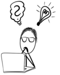
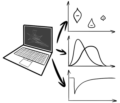
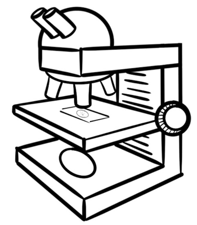
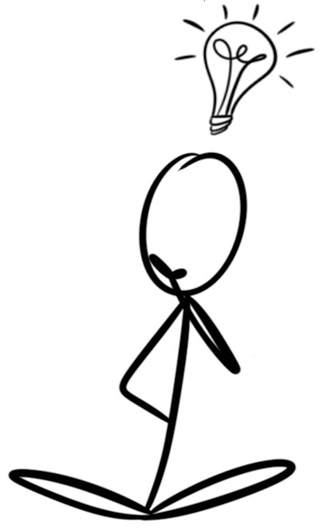

Fiji Basics

Summary
Fiji is an open source software for processing and analysing scientific images. This course will briefly cover aspect of image formation, analysis practise and an introduction to image processing. There will be a focus on practical sessions where the participants will gain hands-on experience.
Target Audience
- All researchers using light microscopy
- Those with no or limited experience in bioimage analysis
- Students and staff members from the universities in Liverpool, affiliated institutions and other external institutions/individuals
Pre-requisites
- The desire to learn about image analysis
Aims and Objectives
This course will enable participants to:
- Recall where and how to access additional help in the future
- Identify the place of image analysis within the experimental pipeline
- Describe the formation of digital microscopy images
- Practise installing Fiji and keeping it up to date
- Recognise common image properties
- Employ image adjustments and annotation tools
- Explain a typical image analysis sequence
- Propose image pre-processing to reduce noise and enhance features
- Set up measurements
- Propose an image analysis pipeline for a given task
- Recreate an image analysis pipeline from the literature
- Evaluate a given image analysis pipeline
- Recall the FAIR principle
Course Materials
This material was adapted from a course run in the CCI by David Mason in 2018:
- Lecture slides
- Exercises
- Sample Data
- Course work (optional though strongly encouraged)
Administrative Details:
- Duration: TBA
- Pricing: TBA
© Marie Held